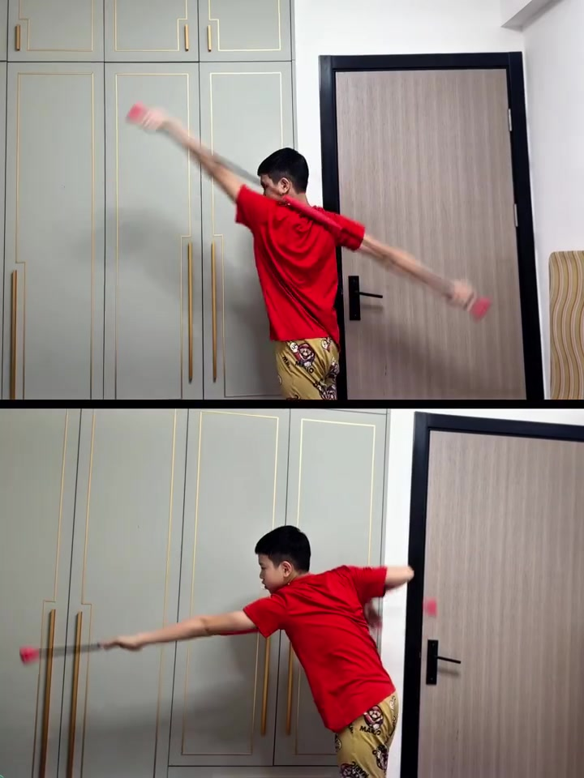
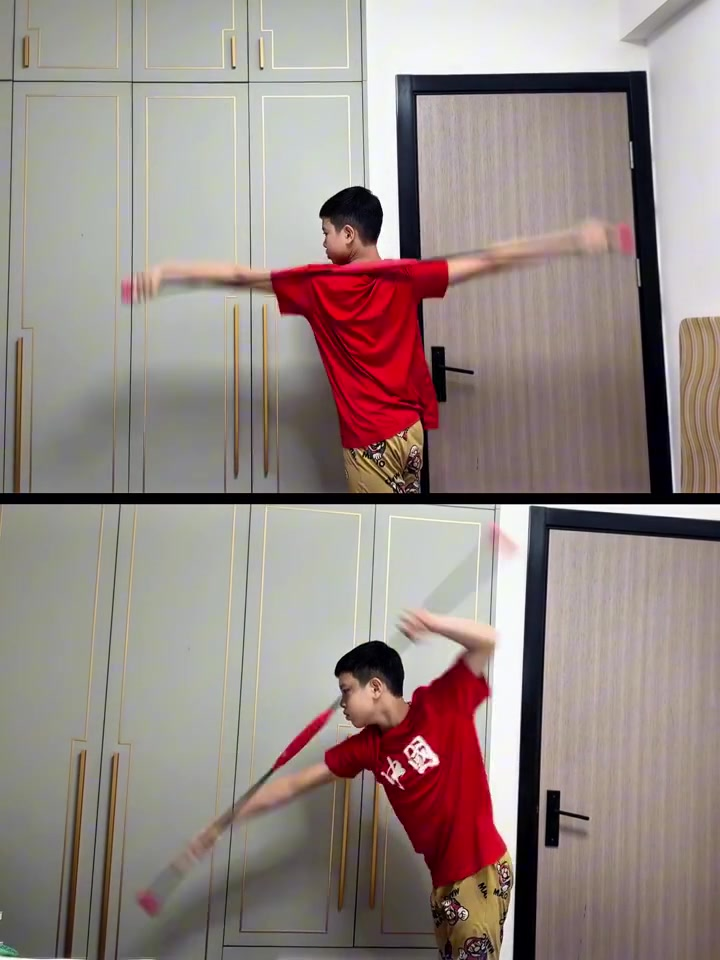
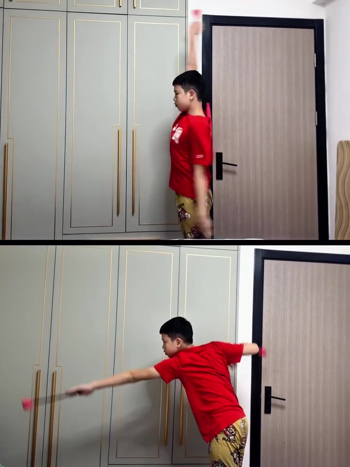
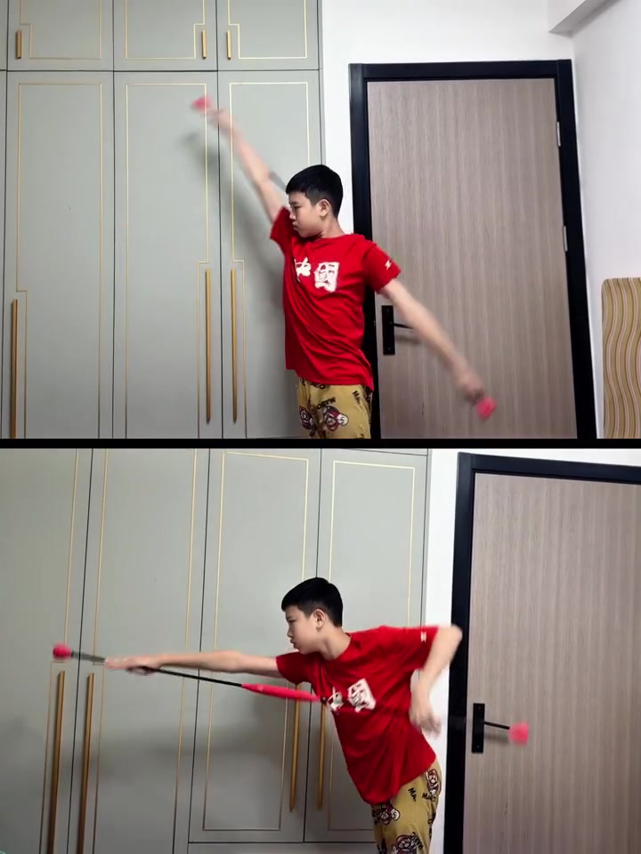
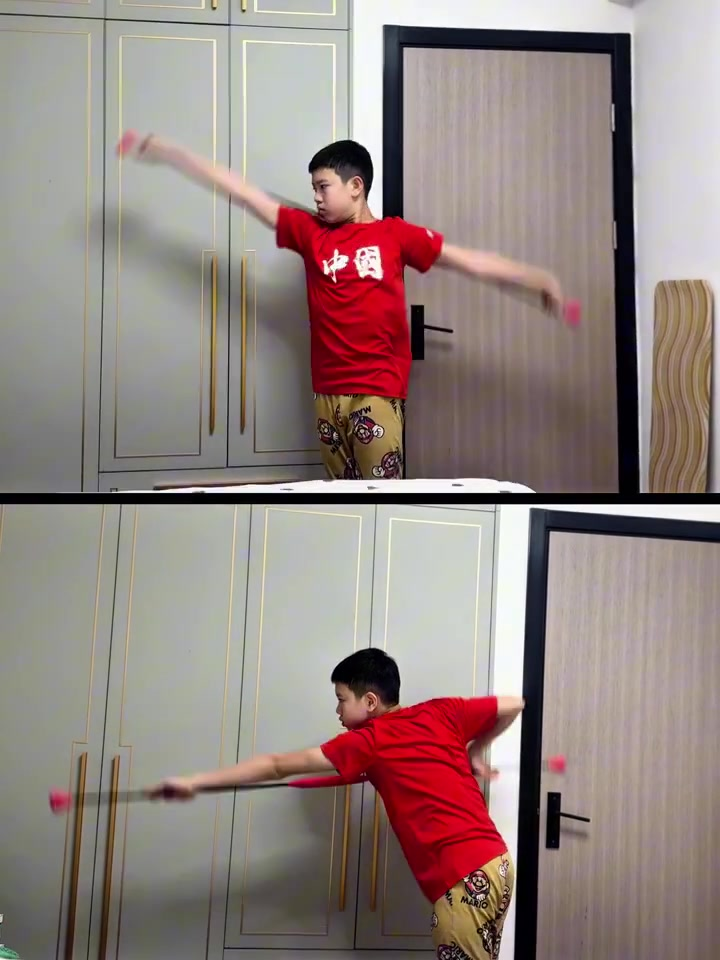
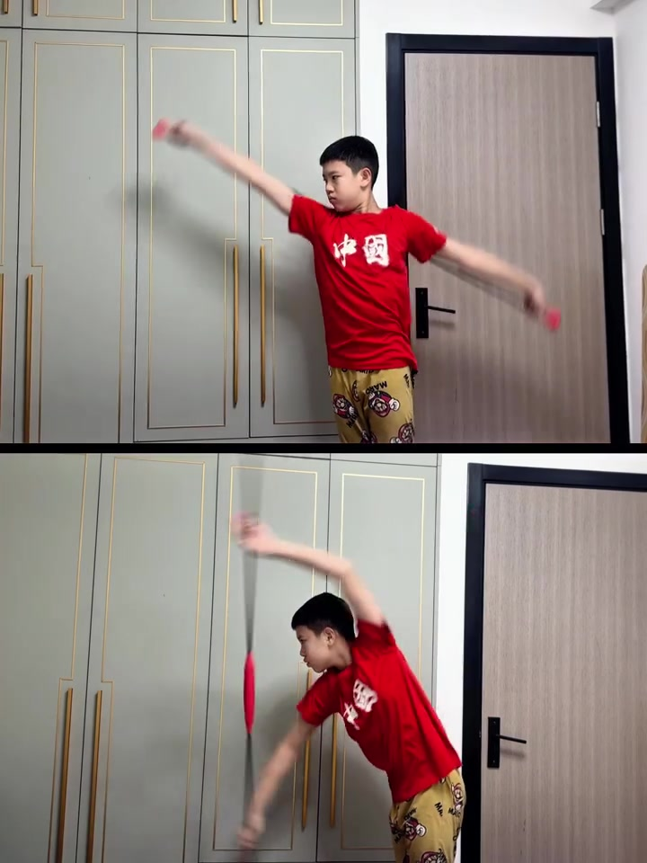

开场 · 00:00
卧室里的一根棍子，同时练两种泳姿
视频以上下分屏呈现：男孩穿红色印有「中国」字样的T恤、卡通睡裤，站在浅绿色衣柜与深色房门之间。上下两格都是他手持一根两端带粉色软头的短棍，重复做同一类「转肩」动作，但身体姿态与棍子轨迹明显不同——这正是笔记标题「仰泳·自由泳陆上持棍转肩」要区分的两条线。
全片只有约 9 秒背景音乐，没有真人讲解口播。Whisper 识别出的两句歌词（见页末转录）经比对确认是背景配乐歌词，与游泳动作讲解无关；正文内容以画面动作与笔记文案为准，不据此杜撰口播内容。

上格 · 仰泳持棍 · 00:00–00:08
身体贴墙站直，棍子画一条竖着的大弧线
上格里男孩始终站得比较直，双手分别握住棍子两端。棍子随手臂从「贴墙高举过头」摆到「水平一字展开」，再摆到「体侧偏后下方」，随后又回到高举位置，如此循环。这条轨迹贴着身体侧面走一个接近半圆的大弧，用来模拟仰泳移臂时手臂贴近身体、从入水到划水结束的整段路径，重点在肩关节打开的幅度而不是发力。


下格 · 自由泳持棍 · 00:01–00:08
上身前倾俯身，棍子在身前画一条前后来回的弧
下格里男孩上身明显前倾、接近俯身姿态，双手持棍在身前完成「向前下方伸出」和「向后上方摆起、肘部抬高」两个交替动作。这更接近自由泳的入水抓水与高肘出水：棍子前伸下探对应手臂入水后向前下方摸到最远点，棍子后摆抬肘则对应划水结束、手肘先于手掌抬起准备移臂。


动作循环 · 00:04–00:09
两条弧线各自重复，没有中途切换
整段 9 秒里，上下两格各自独立循环同一套动作，没有出现「先做仰泳再切自由泳」的顺序剪辑，而是并排同时进行，方便观众直接对比两种泳姿在陆上转肩时身体角度（站直 vs 俯身）与棍子路径（体侧弧线 vs 身前来回）的差异。

笔记给出的训练量
视频画面本身没有叠加文字或语音报数，训练量信息来自笔记文案：「仰.自各100次x3组」，即仰泳持棍转肩与自由泳持棍转肩两个动作，各做 100 次、共 3 组。视频呈现的是动作示范，具体计数与组间休息未在画面中出现。